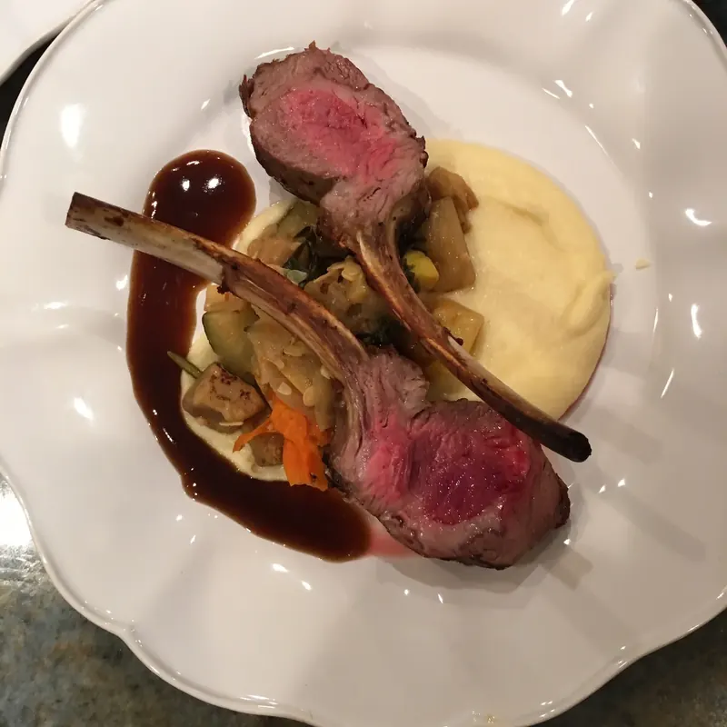
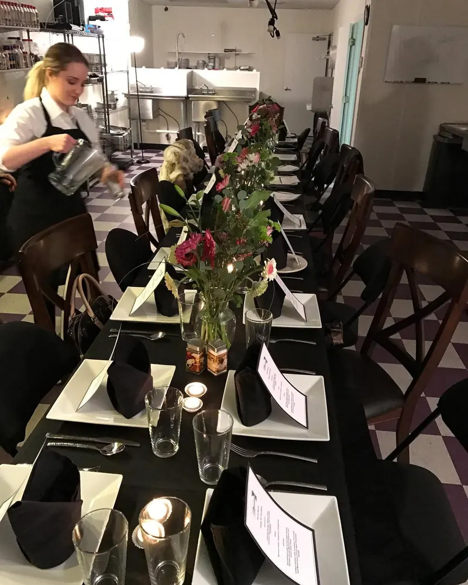
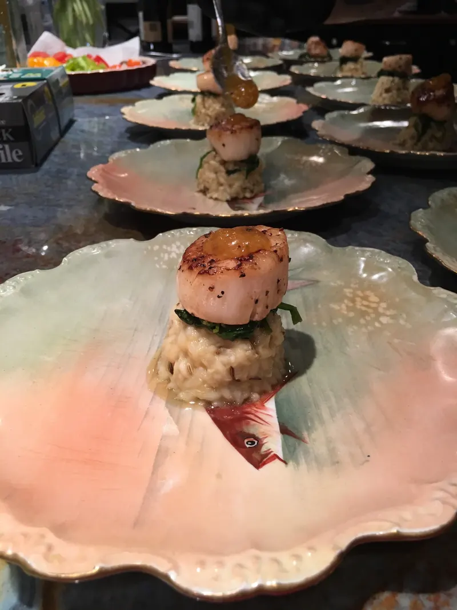
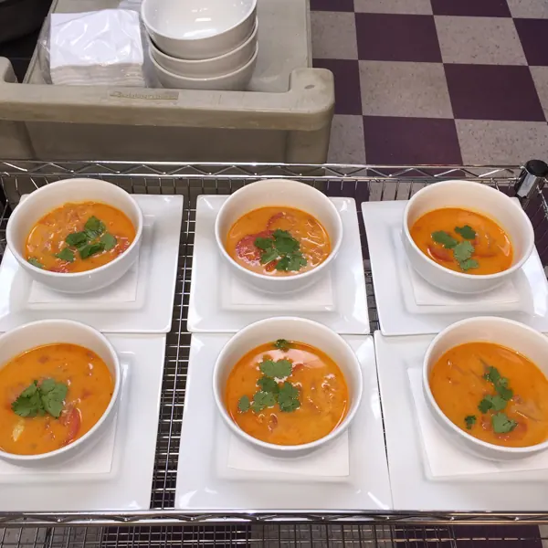
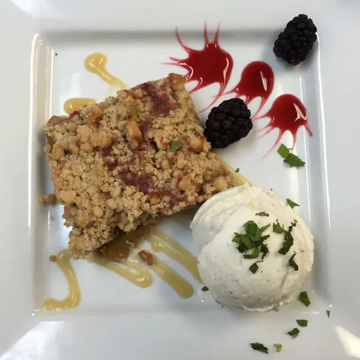

Zone
Breakfast, lunch and dinner for 6 days, built to 4-block macros for fat loss and lean muscle.
$14.05per meal · full plan
See the menu for ZoneChef Michael Saunders ran kitchens at Morton's, The Ore House and Oryx. Now he writes a brand-new menu every week, cooks it from scratch in Raleigh, and delivers it every Tuesday to your home, office or gym. You heat, plate and enjoy.
Order by Saturday at 8 PMDelivered Tuesday


Braised Pork Osso Bucowith spring vegetables and white wine risotto, on the latest menu
Every plan is cooked fresh each week by Chef Mike. Order one week or every week. There's no contract.
Breakfast, lunch and dinner for 6 days, built to 4-block macros for fat loss and lean muscle.

Six days of lunches and dinners with no grains, no dairy and no added sugar.

Six days of lunches and dinners for cleaner, lighter eating that still tastes like a restaurant.

Real dinners the whole table will eat. Each one feeds three adults, or two adults and two kids.
Also from the JOMB kitchen: cooked protein by the pound · gift cards · every price on one page
Pick a weekly plan for one, two or the whole family, from 2 to 7 days a week. Subscribers save up to 12%, lock in their price, and can skip or pause any week.
Proposed plan · for Chef Mike’s review
No shopping, no prep, no cleanup, and no subscription to manage. Just a fridge full of real food every Tuesday.
A brand-new menu drops every Wednesday evening. Choose Zone, Paleo, Low-Carb Dairy-Free or Family dinners.
Every WednesdayCheck out online in the JOMB Store before Saturday at 8 PM. Order one week, or subscribe and save.
Saturday · 8 PMChef Mike cooks it all from scratch, and it arrives Tuesday at your home, office or gym. Heat, plate, enjoy.
Tuesday · 10 AM – 5 PMTo your door, your office or your CrossFit gym. Not home? Leave a cooler with ice packs and we'll tuck your meals inside.
 Packed and ready for Tuesday
Packed and ready for TuesdayChef Michael Saunders spent 20+ years in professional kitchens: Executive Sous Chef at Morton's The Steakhouse in Dallas, then Executive Chef at The Ore House in Steamboat Springs and at Oryx in Raleigh.
Then he asked a simple question: why should restaurant-quality food only happen at a restaurant? Just One More Bite is his answer. Gourmet, fresh, healthy meals your family enjoys at home, without the shopping, the prep or the cleanup.
“Three of the greatest things in life are good food, good drinks and good company. Just One More Bite will provide the first. It's up to you to provide the rest.”
— Chef Michael Saunders
 Quality-checking a house vinaigrette
Quality-checking a house vinaigretteEating for performance over the past 5 years with JOMB meals has helped get my body composition where I needed it to be in order to be competitive. Food for athletic performance doesn't have to be bland and monotonous.
Instead of spending our very sacred and limited time together after our children are in bed cooking, we get to sit down together, eat a wonderful, healthy meal and focus on reconnecting with one another.
The price and ease of ordering and delivery make life so easy! It's like having a date night in your own home! His white bean chicken chili… THE BEST!
*Individual results vary. JOMB meals support your goals; they aren't medical treatment.
Read every reviewNational services ship you a box. Just One More Bite is a Raleigh chef cooking for Raleigh tables.
| Compare | Just One More Bite | Typical national meal service |
|---|---|---|
| Who cooks | An executive chef, here in Raleigh | Large central kitchens |
| The menu | Brand-new every week | A rotating catalog |
| How it arrives | Delivered Tuesday to your home, office or gym | Shipped in a box by a carrier |
| Ingredients | From scratch, USDA Choice meats, local and fresh when possible | Varies by company |
| Your effort | Heat, plate, enjoy | Heat and eat, or prep and cook (meal kits) |
| Questions | Call or email Chef Mike's team directly | A customer-service queue |
| Commitment | Order any week. No contract. | Usually a subscription to manage |
Birthdays, anniversaries, rehearsal dinners and holiday parties. Chef Mike is booking holiday dinners and events now.

Plated, restaurant-style dinners in your home, customized to the occasion.
Plan a dinner
Buffets, plated dinners and passed hors d'oeuvres, built around what you love.
Get a quote
From $50, or send a week of dinners to someone who needs a break.
Give a gift






Chef Michael Saunders posts a brand-new menu every Wednesday evening. You order online in the JOMB Store by Saturday at 8 PM, the kitchen cooks everything from scratch in Raleigh, and your meals are delivered on Tuesday between 10 AM – 5 PM to your home, office or CrossFit gym.
We deliver across the Raleigh area, including Raleigh, Cary, Morrisville, Research Triangle Park (RTP) and Knightdale. Meals can go to your home, your workplace or your CrossFit gym. Somewhere else in the Triangle? Call or email us at (919) 443-5408 / jomborders@gmail.com and we'll tell you whether we can reach you.
Orders for the next Tuesday close Saturday at 8 PM. The new menu goes up every Wednesday evening, so you have a few days to choose.
No problem. Leave a cooler outside with ice packs and our driver will transfer your meals into it. A 48-quart cooler is plenty for most orders. If you pick up at a gym or office drop point, meals arrive in JOMB cooler bags, and those go back to the drop point before the next delivery.
No. You can order any single week, no contract. If you'd like dinner handled every week, the JOMB Membership plans save 5–12% and you can skip or pause any week by Saturday at 8 PM. Chef Mike recommends at least 3–4 weeks in a row on the Low-Carb Dairy-Free plan to really feel the difference.
Checkout is online and secure in the JOMB Store. Prices are listed before sales tax.
New menu every Wednesday evening. Order by Saturday at 8 PM, and Chef Mike delivers Tuesday.
Questions? Call (919) 443-5408 or email jomborders@gmail.com.